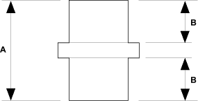

| Item |
Measurement |
Qualification |
Standard or New |
Service Limit |
| Mainshaft 4th and 5th gears distance collar |
I.D. |
|
32.00-32.01 mm (1.2598-1.2602 in.) |
32.02 mm (1.261 in.) |
| O.D. |
|
38.989-39.000 mm (1.5350-1.5354 in.) |
38.94 mm (1.533 in.) |
| Length

|
A |
51.95-52.05 mm (2.045-2.049 in.) |
- |
| B |
24.03-24.08 mm (0.946-0.947 in.) |
- |
| Mainshaft 6th gear distance collar |
I.D. |
|
28.00-28.01 mm (1.102-1.103 in.) |
28.02 mm (1.103 in.) |
| O.D. |
|
34.989-35.000 mm (1.3775-1.3779 in.) |
34.940 mm (1.3756 in.) |
| Length |
|
24.03-24.08 mm (0.946-0.947 in.) |
- |
| Reverse idler gear |
I.D. |
|
20.016-20.043 mm (0.7880-0.7891 in.) |
20.90 mm (0.832 in.) |
| Gear-to-reverse gear shaft clearance |
|
0.036-0.084 mm (0.0014-0.0033 in.) |
0.16 mm (0.006 in.) |
| Double cone synchro |
Outer synchro ring-to-synchro cone clearance |
Ring pushed against gear |
0.70-1.19 mm (0.028-0.047 in.) |
0.3 mm (0.012 in.) |
| Synchro cone-to-gear clearance |
Ring pushed against gear |
0.50-1.04 mm (0.020-0.041 in.) |
0.3 mm (0.012 in.) |
| Outer synchro ring-to-gear cone clearance |
Ring pushed against gear |
0.95-1.68 mm (0.037-0.066 in.) |
0.6 mm (0.024 in.) |
| Triple cone synchro |
Outer synchro ring-to-synchro cone clearance |
Ring pushed against gear |
0.70-1.19 mm (0.028-0.047 in.) |
0.3 mm (0.012 in.) |
| Synchro cone-to-gear clearance |
Ring pushed against gear |
0.50-1.04 mm (0.020-0.041 in.) |
0.3 mm (0.012 in.) |
| Outer synchro ring-to-gear cone clearance |
Ring pushed against gear |
0.95-1.68 mm (0.037-0.066 in.) |
0.6 mm (0.024 in.) |
| Shift fork |
Finger thickness |
|
7.4-7.6 mm (0.29-0.30 in.) |
- |
| Fork-to-synchro sleeve clearance |
|
0.35-0.65 mm (0.014-0.026 in.) |
1.0 mm (0.039 in.) |
| Reverse shift fork |
Finger thickness |
|
13.4-13.7 mm (0.527-0.539 in.) |
- |
| Fork-to-reverse idler gear clearance |
|
0.20-0.59 mm (0.007-0.024 in.) |
1.3 mm (0.051 in.) |
| Shift arm |
I.D. |
|
13.973-14.000 mm (0.5501-0.5512 in.) |
- |
| Shift fork diameter at contact area |
|
16.9-17.0 mm (0.665-0.669 in.) |
- |
| Shift arm-to-shift lever clearance |
|
0.2-0.5 mm (0.008-0.020 in.) |
0.62 mm (0.024 in.) |
| Select lever |
Finger width |
|
14.85-14.95 mm (0.585-0.589 in.) |
- |
| Shift lever |
Shaft-to-select lever clearance |
|
0.05-0.25 mm (0.002-0.010 in.) |
0.50 mm (0.020 in.) |
| Groove (to select lever) |
|
15.00-15.10 mm (0.591-0.594 in.) |
- |
| Shaft-to-shift arm clearance |
|
0.013-0.07 mm (0.0005-0.003 in.) |
0.1 mm (0.004 in.) |
| M/T differential carrier |
Pinion shaft contact area I.D. |
|
18.010-18.028 mm (0.7091-0.7098 in.) |
- |
| Carrier-to-pinion shaft clearance |
|
0.027-0.057 mm (0.0011-0.0022 in.) |
0.1 mm (0.004 in.) |
| Driveshaft contact area I.D. |
|
28.025-28.045 mm (1.1033-1.1041 in.) |
- |
| M/T differential pinion gear |
Backlash |
|
0.05-0.15 mm (0.002-0.006 in.) |
- |
| I.D. |
|
18.042-18.066 mm (0.7103-0.7113 in.) |
- |
| Pinion gear-to-pinion shaft clearance |
|
0.059-0.095 mm (0.0023-0.0037 in.) |
0.15 mm (0.006 in.) |
| 80 mm shim |
80 mm shim-to-bearing outer race clearance in transmission housing |
|
0-0.10 mm (0-0.0039 in.) |
Adjust |